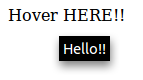

title 屬性是實現 tooltip 的一種方式：
<p id="hover" title="Hello!!">Hover HERE!!</p>

由於 title 的表現方式直接由瀏覽器操控，而且不支援格式上的變化，因此不需要為了驗證它的內容而把它叫出來，只要單純取出 title 的屬性值做驗證即可。
>>> sel.get_attribute('id=hover@title')
u'Hello!!'但若是要透過畫面截圖來實現 L10N Automation，就必須想辦法把它叫出來了…
另一種 tooltip 常見的實作方式是利用 JavaScript 來完成，可以做出更多的變化，例如 jQuery TOOLS。要叫出 tooltip 通常要觸發一連串的滑鼠事件：
>>> sel.open('http://jquerytools.org/demos/tooltip/any-html.html')
>>>
>>> tooltip = 'id=download_now'
>>> sel.mouse_over(tooltip)  >>> sel.mouse_move_at(tooltip, '1,1')
>>> sel.mouse_move_at(tooltip, '1,1')  >>>
>>> sel.mouse_out(tooltip)
>>>
>>> sel.mouse_out(tooltip) 
| 通常 mouse over 就能將 tooltip 叫出來。 | |
但某些情況下後面要跟著小小的 mouse move 才會有作用；這裡 '1,1' 指的是相對於 tooltip 的座標位置。
| |
| 送出 mouse out 就能將 tooltip 隱藏起來。 |
參考資料
-
[selenium-users how to test tooltip message in selenium RC?? - Grokbase] (2012-07-26) - 先觸發 mouse over 再抓取 title 屬性